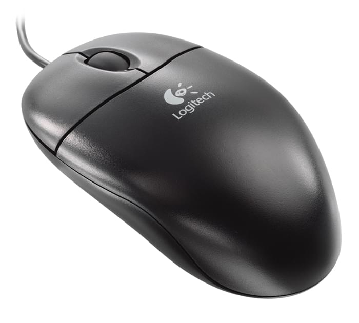
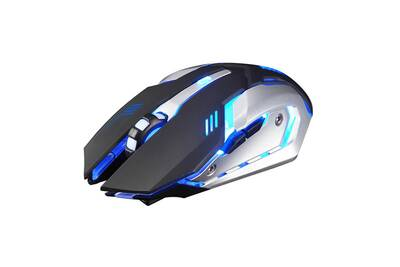

Voici deux types de souris que je vais vous présenter
ici nous avons une souris simple

cliquez ici pour voir une souris ou en cliquant sur l'image de la souris
En informatique, le terme souris -- « mouse », en anglais -- fait référence à un dispositif de commande tenu dans la paume de la main, connecté à un ordinateur et dont le déplacement sur une surface entraîne le déplacement d'un curseur sur l'écran.
Donc une souris simple comme celle-ci est destiné juste a deplacé ca souris.
Ici nous avons une souris gamer

cliquez ici pour voir une souris gamer ou en cliquant sur l'image de la souris
La souris gamer, ou « souris de jeu vidéo », est une variante de la souris informatique conçue pour les jeux vidéo sur ordinateur. ... La souris gamer est en principe destiné à un PC gamer, un ordinateur conçu pour le jeu vidéo.
Cette souris est disign pour les jeux vidéos, belle apercue de la souris, beaucoup de DPI, souris rapide